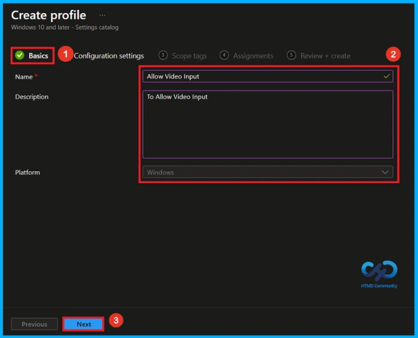
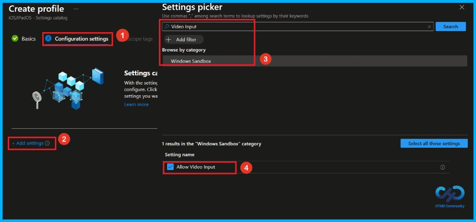
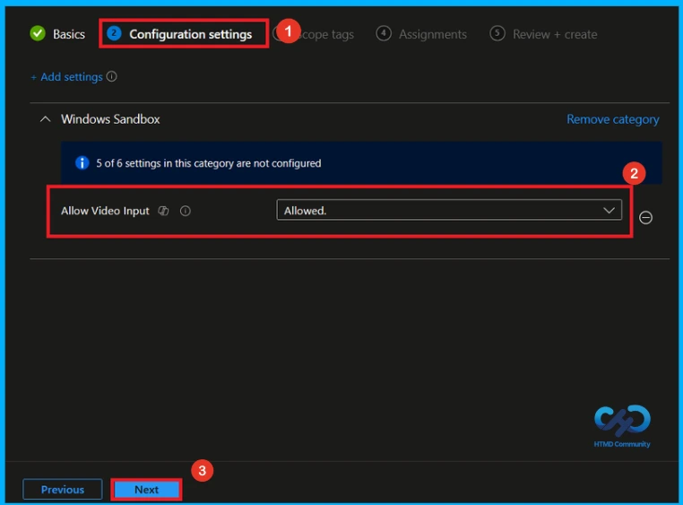
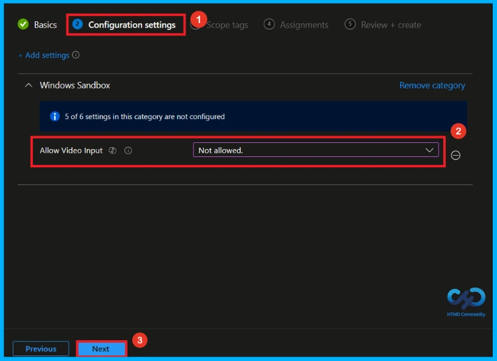
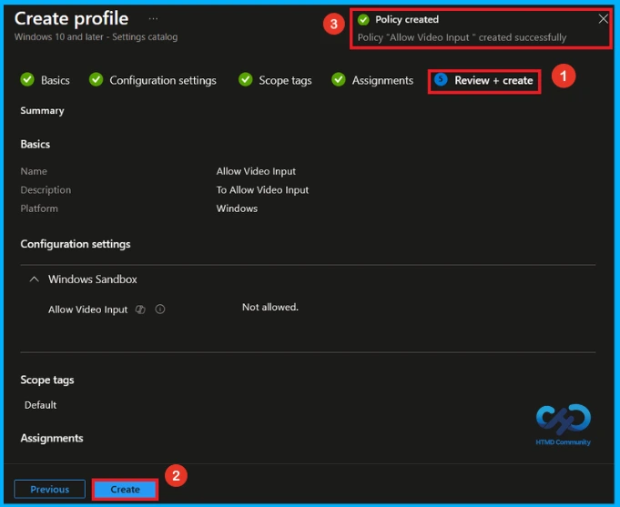
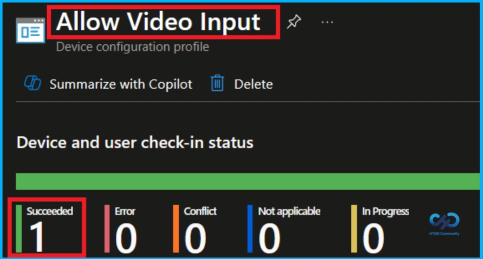
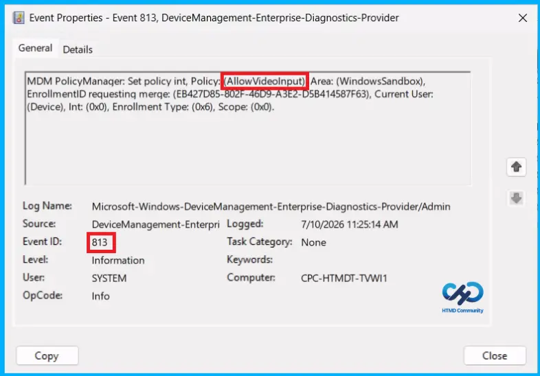
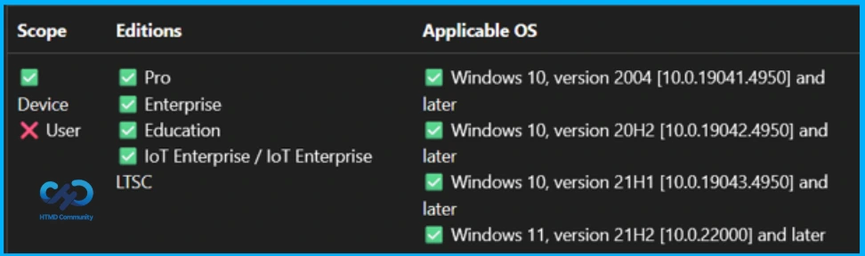
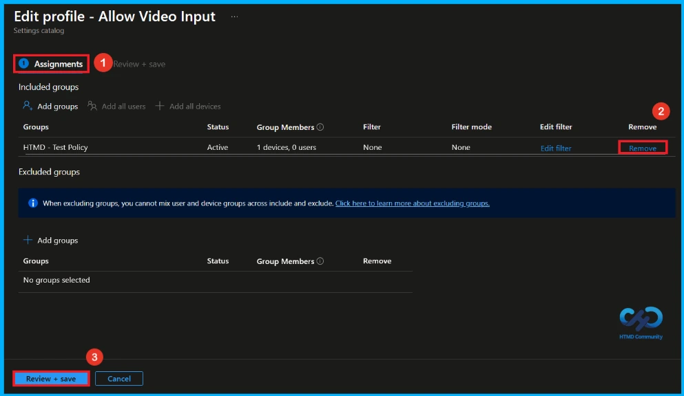
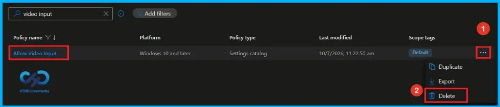

Key Takeaways
- Enable the setting to allow video input in Windows Sandbox.
- Disable the setting to block video input.
- Apps that need a camera may not work when video input is blocked.
- Enable this setting only if video input is needed.
Hey, let’s discuss about how to Configure Windows Sandbox Video Input to Balance Security and Functionality using Intune. Windows Sandbox lets you control whether video input is available. If this setting is enabled, applications in Windows Sandbox can use video input. If it is disabled or not configured, video input is turned off, and apps that require camera access may not work properly.
Table of Contents
Configure Windows Sandbox Video Input to Balance Security and Functionality using Intune
Enabling video input can improve compatibility for applications that need a camera, but it may also introduce security risks by allowing access to the host’s video input. Therefore, this setting should be enabled only when necessary and after considering the security implications.
How to Create a Policy
To create allow video input policy, first sign in to the Microsoft Intune Admin Center. Then, click Devices from the left menu and select Configuration. After that, click Create and choose New Policy to start creating a new policy.

Create a Profile
After selecting New Policy, a dialog box will open where you need to choose the Platform and Profile Type. Set the Platform to Windows 10 and later and select Settings Catalog as the Profile Type, then click Create to proceed.

Basic Tab of Video Input Policy
In the Basics tab, enter a name for the policy and add a description. The policy name is required, while the description is optional. Here, I gave the policy name as Allow Video Input and description(To Allow Video Input). Click Next to continue.

Configure Video Input Policy
On the Configuration settings page, click Add settings to open the Settings picker. In the search box, type Video Input, then select Windows Sabdbox from the results. Next, check the box for Allow Video Input, and close the Settings picker.

Allow Video Input
Once you exit the Settings Picker, the chosen policy is displayed under the Configuration settings page. Select either Allowed or Not Allowed for the Allow Video Input setting. Since the default value is Allowed. Then click Next to proceed.

Disable Video Input Policy
To disable the Allow Video Input policy, locate the Allow Video Input setting under Windows Sandbox. Then, configure the setting by selecting Not allowed from the drop-down menu. After applying the setting, click Next to continue with the policy creation process.

What is Scope Tag
A Scope Tag in Intune is used to control the visibility and access of Intune resources based on administrative roles. Scope tags are optional. You can add a scope tag by clicking the Select scope tags button. Click Next to continue.

Assignment Tab of Video Input
The assignments tab is very important step that determines which groups can be selected to assign the policy. Click on the +Add groups option under included groups. Select the group(HTMD – Test Policy) from the list of groups on your tenant. And you can see the selected group on the Assignments tab. Click Next to continue.

Review + Create Tab
Before completing the policy creation, you can review each tab to avoid misconfiguration or policy failure. After verifying all the details, click on the Create Button. After creating the policy, you will get a success message like “Allow Video Input created successfully”.

Device and User Check-in Status
To view a policy status, go to the Devices > Configuration in the Intune portal, select the policy Allow Video Input. Check whether the status has shown succeeded (1). Use manual sync in the Company Portal to speed up the process.

Client Side Verification
To confirm if a policy has been applied, use the Event Viewer on the client device. Go to Applications and Services Logs > Microsoft > Windows > Device Management > Enterprise Diagnostic Provider > Admin. From the list of policies, use the Filter Current Log option and search for Intune event 814.
MDM PolicyManager: Set policy int, Policy: AllowVideolnput) Area: (WindowsSandbox),
EnrollmentID requesting merqe: (EB427D85-802F-46D9-A3E2-D5B414587F63), Current User:
(Device), Int: (0x0), Enrollment Type: (0x6), Scope: (0x0).

Windows Configuration Service Provider (CSP)
The policy Configuration Service Provider (CSP) is a tool for businesses to manage settings on Windows 10 and 11 devices. It details each policy’s function (Description Framework Properties) and how it relates to older Group Policy settings (Group Policy Mapping details).
Description framework properties:
- Format – Int
- Access Type – Add, Delete, Get, Replace
- Default Value – 1
Allowed values:
| Value | Description |
|---|---|
| 0 | Not allowed |
| 1(Default) | Allowed |
| Name | Value |
|---|---|
| Name | AllowVideoInput |
| Friendly Name | Allow video input in Windows Sandbox |
| Location | Computer Configuration |
| Path | Windows Components > Windows Sandbox |
| Registry Key Name | SOFTWARE\Policies\Microsoft\Windows\Sandbox |
| Registry Value Name | AllowVideoInput |
| ADMX File Name | WindowsSandbox.admx |

How to Remove Assigned Group from Video Input Policy
If you want to remove a group from a policy assignment for security updates, open the Allow Video Input policy from the Configuration tab and click Edit under the Assignment section. Then select Remove to unassign the policy.
For detailed information, you can refer to our previous post – Learn How to Delete or Remove App Assignment from Intune using by Step-by-Step Guide.

How to Delete Allow Video Input Policy from Intune
Admins may delete policies in Intune due to different reasons. If you want to quickly delete allow video input Policy, Intune helps you to do that. To do this, search for this policy on the Intune admin center. Click on the 3-dot option and then click on the Delete button.
For detailed information, you can refer to our previous post – How to Delete Allow Clipboard History Policy in Intune Step by Step Guide.

Need Further Assistance or Have Technical Questions?
Join the LinkedIn Page and Telegram group to get the latest step-by-step guides and news updates. Join our Meetup Page to participate in User group meetings. Also, Join the WhatsApp Community and WhatsApp Channel to get the latest news on Microsoft Technologies. We are there on Reddit as well.
Author
Anoop C Nair has been Microsoft MVP from 2015 onwards for 10 consecutive years! He is a Workplace Solution Architect with more than 22+ years of experience in Workplace technologies. He is also a Blogger, Speaker, and Local User Group Community leader. His primary focus is on Device Management technologies like SCCM and Intune. He writes about technologies like Intune, SCCM, Windows, Cloud PC, Windows, Entra, Microsoft Security, Career, etc